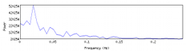
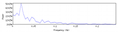

FSL
These are random bash shell scripts for FSL that I find useful.
- CompROI.sh
Computes mean value in each ROI, where ROI are defined by an integer valued atlas. Can flexibly specify ROI as a single or multiple integer values. Example usage, where values 3 and 4 in the ROI atlas define the left and right hemispheres:CompROI.sh ROItemplate "3:L_Brain 4:R_Brain" ImgList.csv Result.csv
or, can merge multiple values into a single ROICompROI.sh ROItemplate "3+4:Brain" ImgList.csv Result.csv
- Dummy.sh
Creates a set of dummy variables from a categorical variable; requires R. - DVARS.sh | Github: DVARS.sh
Creates a version of tsdiffana or DVARS, the standard deviation of temporal difference images. See my notes on Standardizing DVARS; on the original DVARS, see Matthew Brett's Data Diagnostics and Power et al. (2012) NeuroImage, 59(3), 2142–54.
Fix as of 2017/02/19 - Was computing DVARS with standard deviation, instead of root mean square by original definition; fix has at most a small impact, increasing some DVARS values. Thanks to Chris Gorgolewski for pointing this out. - easythresh_conj.sh
Based on the FSL scripteasythresh, this script takes two statistic images and does a conjunction analysis, testing the 'Conjunction Null Hypothesis. The interpretation of significant regions is that there is evidence of effects in both contrasts tested (not just either/or). There is no assumption of independence required between the two effects tested. For more see my conjunction research page. - fsl_fdr.sh
Based on a zstat, tstat or randomise P-value image creates an image of 1 minus FDR-corrected P-values; optionally creates a rendering (colored blobs on a specified background image). For example, in a Feat results directory, running
will produce a 1-PFDR image called zstat1_fdrcorrp in the stats directory. To additionally create an rendered image, use thefsl_fdr.sh stats/zstat1 mask stats/zstat1_fdrcorrp-rendoption, like
For 1-P images from randomise, use thefsl_fdr.sh -rend example_func rendered_thresh_zstat1_fdrcorrp \ stats/zstat1 mask stats/zstat1_fdrcorrp-1mpoption, as in:
Finally, if you've got SPM T images, andfsl_fdr.sh -1mp results_vox_p_tstat1 mask results_vox_corrp_tstat1$dofis the degrees-of-freedom, you can use
where setting the mask name to "0" has the effect of using an implicit mask (<>0 means in the brain).fsl_fdr.sh -Tdf $dof spmT_0001 0 spmT_0001_Pfdr - fslmax.sh
For 1 or more files it prints the maximum value in the image. Very useful when used with randomise, as in
which will show you the best 1-minus-P for each corrected P-value image.fslmax.sh *corrp*nii* - fslstats.sh
Allows you to use offslstatstool with multiple files (generalization offslmax.sh). - fslinfos.sh
Allows you to use offslinfotool with multiple files, creating a tabular report for the multiple files (optionally a CSV report). - PlotPow.sh
Plots the average power spectrum of a 4D volume; specifically the power spectrum is computed voxel-wise and then averaged over the brain. Has options to detrend and high-pass to examine the effects of those operations. - PlotFeatMFX.sh PlotFeatMFX.R
This pair of companion scripts produces a plot that visualizes a one-sample mixed effects result at a given voxel. Showing the effect magnitude for each subject and the contribution of intra- and -inter-subject variance, it explains how and why Feat FLAME mixed effects results can vary from OLS. OnlyPlotFeatMFX.shis directly called by the user, like
orPlotFeatMFX.sh Nback.gfeat 23 37 57
but of course requires R.PlotFeatMFX.sh -usemm Nback.gfeat 44 -52 42
{kind=link}
 
